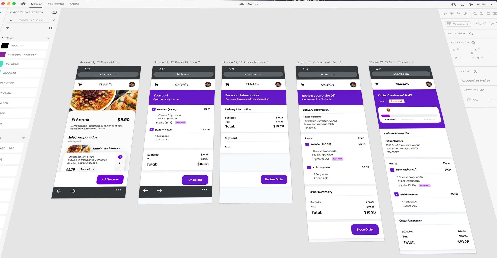

Overview
With the promise of delivering fresh, authentic latin-american food to University of
Michigan students, Chichi’s quickly gained popularity on campus. As a result, it's founders were quickly faced with a need to improve their order and
delivery process, as users were becoming frustrated with communicating through applications such as
Snapchat and Venmo to get their food. My goal was to uncover the root needs of Chichis' customers and create a full stack application around those needs.
Tech stack
HTML, CSS, Bootstrap
Python & Django
Redux & Hooks
PostgreSQL
Adobe XD
Role
UX researcher
Interaction designer
Lead designer
Front end developer
Back end developer
Platforms
Desktop
Mobile
Year
2021
Process

Problems
After conducting twenty interviews with primary and secondary users, I identified three
main issues with the current process.
Overwhelming
Chichis customers agreed that they are overwelmed by the amount of options and
categories presented to them when using services like UberEats and DoorDash.
Unreliable
People unanimously agreed that food delivery services are Untrustworthy because of
their unpredictable prices.
Uncertain
An overarching theme was the inability to track progress throughout the purchase
process.
Opportunity
How might we make Chichis' solution minimal, transparent, and reassuring?
Minimal
A solution should have few categories to choose from, revealing only the essentials in
a progressive manner as users complete their purchase.
Transparent
Information such as delivery fees and source of food should be disclosed at the
beggining and throughout the purchase process.
Reassuring
Chichis customers want to be certain about their purchase progress. It is important to
keep them engaged by providing them with constant feedback and having an open channel of communication
thorughout the process.
Design and Ideation
Once initial assumptions were established, I went through the first four phases of Design Thinking to generate design solutions.
Empathise
Using what I learned during the research process, I created a user persona enriched with attitudinal, contextual, behavioral, and personal data.
Define
Defined user stories and four assessment criteria to evaluate possible solutions.
Ideate
Brainstormed possible solutions and assessed their viability using the semiformal notation (Questions, Options, and Criteria).
Prototype
Created mockups and prototype based on the results of the QOC session.

How might we display products on the Homepage?
The "Two categories" option was chosen as it is faster for users to identify menu options, reveals only the essentials in a progressive manner and reduces visual-search time.
How might we display each category on the HomePage on the Homepage?
The "Collapse menu" was chosen as it reduces visual-search time (only one category is displayed at a time) and increases feedback (having to tap on each title keeps users engaged) and discloses information progressively (preventing information overload).
Prototype

I used Adobe XD as my primary tool for creating mockups, wireframes and prototypes.
The high-fidelity prototype is currently under user testing.
Back-end Development
While conducting the research process, I developed the server-side architecture of the site including JSON based APIs, data models, database design, and serializers. Built core features such as Shopping Cart, User Authentication and Admin Panel.
Technologies used: Python, Django, Django Rest Framework, and PostgreSQL.
Front-end Development
With the back-end foundation ready, I set up the React environment and implemented Redux for state management. Created initial components, screens, constants, reducers, and actions to support user registration and creation of orders and products.
Technologies used: JavaScript, React, Redux, Bootstrap, CSS, HTML.
Impact
The application is currently under user testing and final stages development.